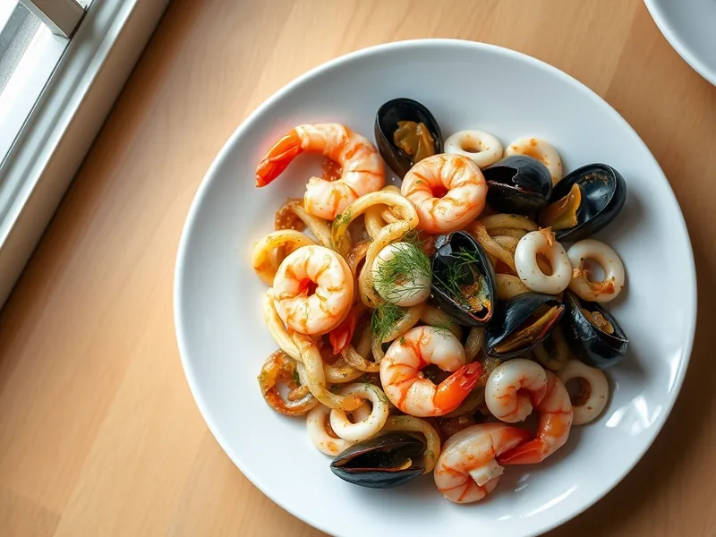

Морской коктейль, жаренный с луком и соевым соусом
Креветки, кальмары и мидии, обжаренные с луком, чесноком и соевым соусом
20 мин2 порц.427 ккал на порциюБ 44 · Ж 22 · У 16Интернациональная кухня
Открыть в приложении: порции, таймеры, список покупок
Продукты на 2 порц.
- Креветки200 г
- Кальмар150 г
- Мидии150 г
- Лук репчатый2 шт
- Чеснок2 зуб.
- Соевый соус2 ст. л.
- Растительное масло1,5 ст. л.
- Сливочное масло15 г
- Перец чёрный молотый1 щеп.
- Лимон по желаниюпо вкусу
- Укроп по желаниюпо вкусу
Как готовить
- Разморозьте морской коктейль в дуршлаге под холодной водой 5 минут и хорошо обсушите.
- Нарежьте лук полукольцами и обжарьте на растительном масле на среднем огне 5 минут до золотистого цвета.
- Добавьте сливочное масло и чеснок, затем морепродукты и жарьте на сильном огне 3 минуты, помешивая, пока жидкость не выпарится.
- Влейте соевый соус, поперчите и жарьте ещё 1-2 минуты, пока морепродукты не покроются глянцем.
- Сбрызните лимонным соком и посыпьте укропом.
Совет. Плохо обсушенный коктейль не жарится, а варится в своём соке, поэтому промокните его полотенцем.